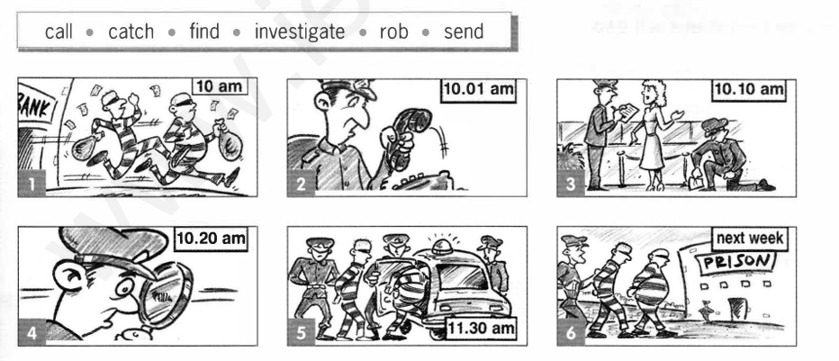

C. Look at the pictures and complete the sentences. Use the correct passive form of the verbs in the box. Add any other words you need.
Hướng dẫn: Nhìn vào các bức tranh và hoàn thành câu. Sử dụng dạng bị động đúng của các động từ trong hộp. Thêm bất kỳ từ nào bạn cần.
(Lưu ý: Đáp án và lời giải chi tiết sẽ hiển thị sau khi bạn nhấn "Kiểm tra".)

Các động từ cần dùng:
callcatchfindinvestigaterobsend